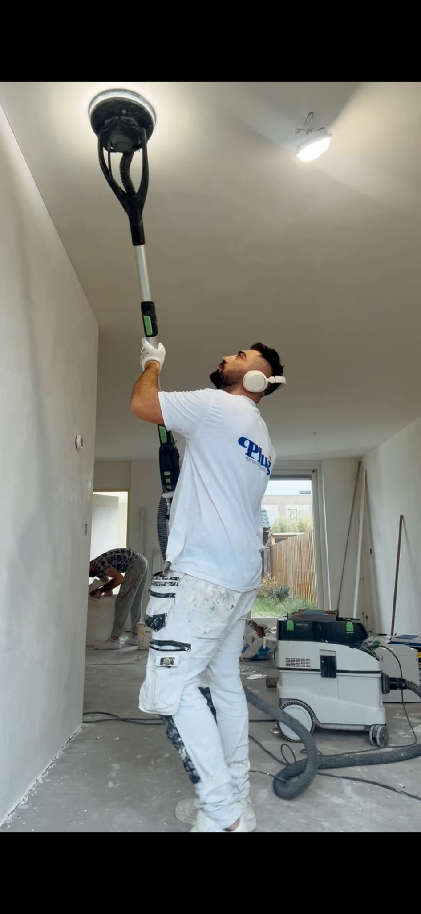
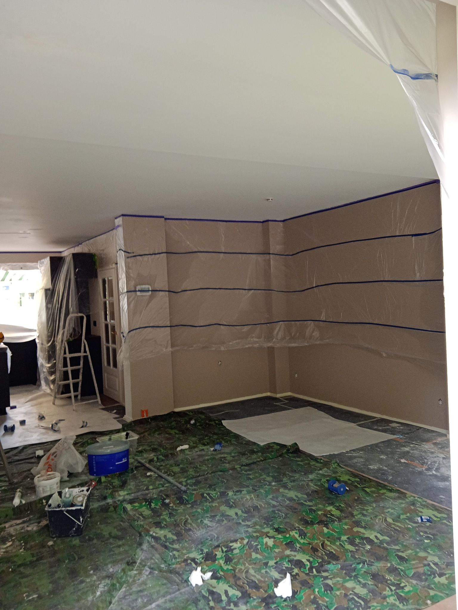
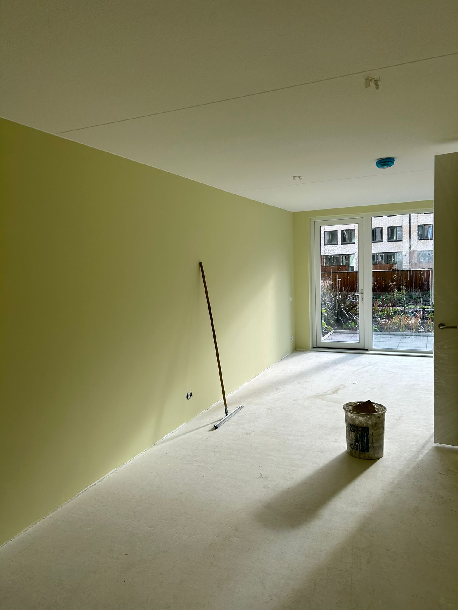

SterkerVerf is officieel sinds 2025 een eigen bedrijf, maar het vakmanschap in ons team gaat veel verder terug.
Als eigen bedrijf zijn we jong: SterkerVerf is officieel opgericht in 2025. Maar de mensen die het werk doen, schilderen al veel langer. Het vak is bij ons doorgegeven van vader op zoon: ervaren vakmensen die hun routine in de praktijk hebben opgebouwd.
Die combinatie maakt ons sterk: de frisse blik en service van een nieuw bedrijf, gedragen door ervaren vakmensen. Iedereen bij ons is bovendien professioneel opgeleid bij Sigma en Sikkens, twee toonaangevende namen in verf en afwerking.

Een vaste prijs vooraf en duidelijke afspraken. Geen verrassingen achteraf.
Goede voorbereiding, A-merk materiaal en een strakke afwerking die meegaat.
We dekken alles goed af en laten uw woning schoon en opgeruimd achter.


FotoLiever een echt gesprek dan een formulier? Heel begrijpelijk. Bel of app ons gerust. U krijgt meteen iemand die met u meedenkt, zonder verkooppraatjes.
Bij SterkerVerf heeft u één vast aanspreekpunt van begin tot eind. Zo weet u altijd bij wie u terecht kunt.
Vraag vrijblijvend een offerte aan, of bekijk eerst ons werk.